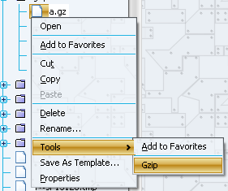

The Gzip Module allows to uncompress selected files using the GZIP format.
Do the following steps for uncompressing a file:
The following screenshot shows selecting a file using the pop-up menu:
The following screenshot shows selecting a file, and initiate compressing by using the main menu Tools|Gzip:

The following screenshot shows the dialog, asking if you want to uncompress the selected file:
The following screenshot shows the dialog, asking if you want to delete the original file: